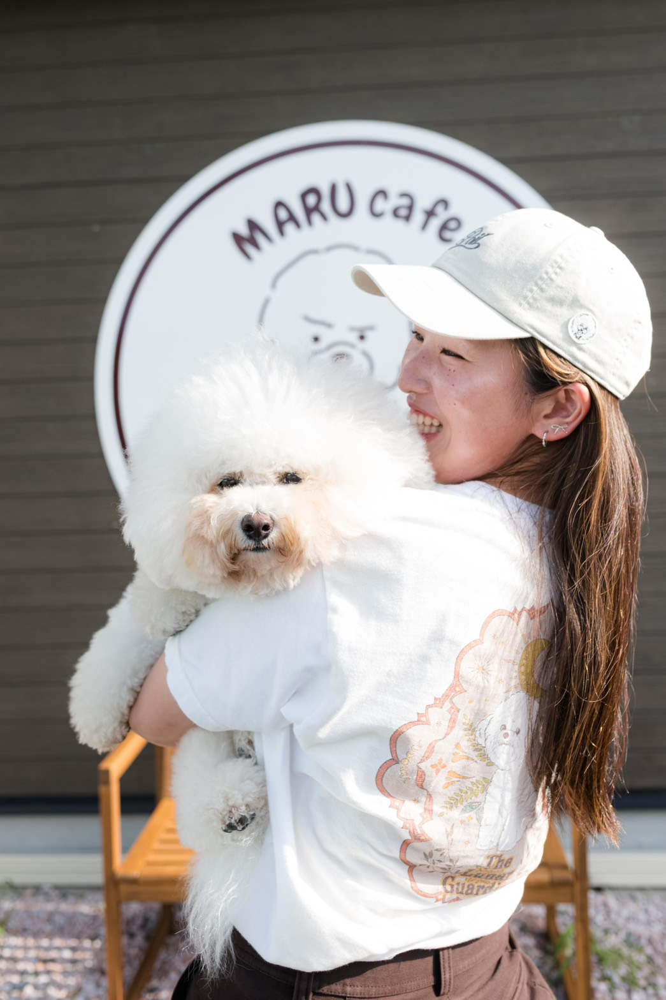
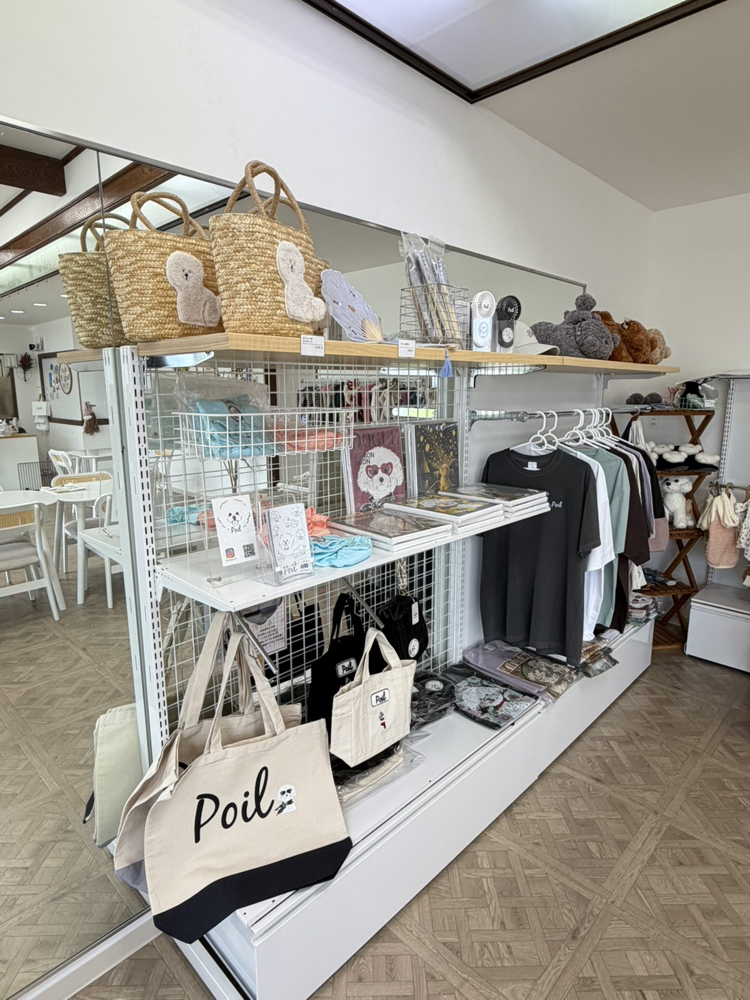

“かわいい”が見つかる、小さなセレクトショップ。

まるが我が家に来て、犬のお洋服などの魅力を知りました。
かわいいものをたくさん集めたい——その気持ちから、このお店ははじまっています。
いまはカフェと一緒に、わんちゃんのお洋服や雑貨、人が使える雑貨まで、少しずつ集めてお店に並べています。
来てくださった方に「また来たいな」と思っていただける空間でありたい。
そんな想いで、ひとつひとつ選んでいます。
韓国・日本のブランドを中心にセレクトしています。
韓国ブランド
韓国ブランド
日本ブランド
日本ブランド
わんちゃん用のお洋服や雑貨のほか、人が使えるカバンや扇子などの雑貨、Tシャツも置いています。
その日その日で並ぶものが変わりますので、ぜひ店頭でご覧ください。
オンラインショップは現在、商品の入れ替えのため準備中です。
再開までもうしばらくお待ちください🙏
